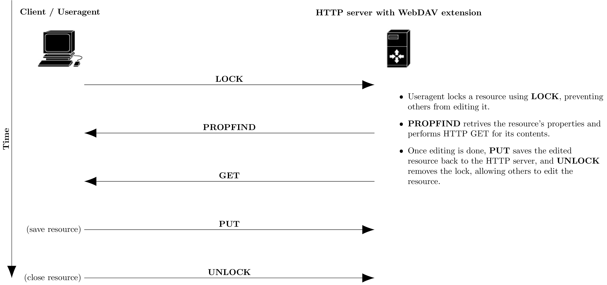

使用命令行挂载操作WebDav云盘
在 macOS 和 linux 上可以通过 mount 命令挂载云盘到本地，也可以使用 curl 命令访问操作 WebDav。
macOS 下使用命令行挂载 WebDAV 云盘#
除了在 Finder 中手动连接服务器（Connect to Server），也可考虑改用内置的 mount 系列命令行挂载/卸载 WebDAV：
# 创建本地挂载点目录
$ sudo mkdir /Volumes/webdav
# 修改用户名和用户组为你自己的用户（组）
$ sudo chown -R faner:staff /Volumes/webdav
# 使用 mount_webdav 命令加载 WebDAV，按照提示输入 username:password
$ mount_webdav -i http://mbpa1398.local/webdav/ /Volumes/webdav
# 使用 diskutil umount 命令卸载 WebDAV
$ diskutil umount /Volumes/webdav
Success
挂载成功后，执行 df -h 命令会输出一条 Filesystem=http://mbpa1398.local/webdav，Mounted on /Volumes/webdav 的条目。
无论哪种方式，挂载成功后，Finder 侧边栏的 Locations/Network 中都会出现相应网盘映射。
linux 下使用命令行挂载 WebDAV 云盘#
在 Ubuntu 或 CentOS 下可以将 WebDAV 挂载为本地磁盘，可采用 rclone 云同步命令行工具，或安装 davfs2 文件系统扩展。
- 安装 davfs2：
- 创建本地挂载点目录：
- 执行 mount 命令挂载 WebDAV：
$ sudo mount -t davfs http://mbpa1398.local/webdav /mnt/webdav@mbpa1398
Please enter the username to authenticate with server
http://mbpa1398.local/webdav or hit enter for none.
Username: $username
Please enter the password to authenticate user $username with server
http://mbpa1398.local/webdav or hit enter for none.
Password: $password
Success
挂载成功后，执行 df -h 命令会输出一条 Filesystem=http://mbpa1398.local/webdav，Mounted on /mnt/webdav@mbpa1398 的条目。
- 直接编辑 WebDAV 上的文件，然后保存同步：
- 用完之后，记得解除挂载：
-
可考虑配置开机自动挂载，涉及以下配置文件：
- davfs2配置文件：/etc/davfs2/davfs2.conf
- davfs2密码配置：/etc/davfs2/secrets
- 自动挂载配置文件：/etc/fstab
WebDAV collaborative authoring verbs#
RFC 4918 - HTTP Extensions for Web Distributed Authoring and Versioning (WebDAV) @RFC Reader
WebDAV extends the set of standard HTTP verbs and headers allowed for request methods. The added verbs include:
| Verb | Action |
|---|---|
| COPY | copy a resource from one uniform resource identifier (URI) to another |
| LOCK | put a lock on a resource. WebDAV supports both shared and exclusive locks. |
| MKCOL | create collections (also known as a directory) |
| MOVE | move a resource from one URI to another |
| PROPFIND | retrieve properties, stored as XML, from a web resource. It is also overloaded to allow one to retrieve the collection structure (also known as directory hierarchy) of a remote system. |
| PROPPATCH | change and delete multiple properties on a resource in a single atomic act |
| UNLOCK | remove a lock from a resource |
WebDAV collaborative authoring in a compatible HTTP server:

curl 命令行访问操作 WebDAV#
BTW: 专业命令行工具 rclone，被誉为“云存储的瑞士军刀”，参考 使用rclone挂载操作WebDav云盘。
- 认证方式可选
--basic，--digest，不指定相当于--anyauth，让 cURL 自动选择。 - -u(--user) 后面可只指定用户名
-u $username，将提示输入密码；也可连带指定密码-u $username:$password。
拉取文件列表#
拉取文件列表，也可指定其他目录（以/结尾）：
$ curl -i --basic -u $username -X PROPFIND http://mbpa1398.local/webdav/ --upload-file - -H "Depth: 1" <<end
<?xml version="1.0"?>
<a:propfind xmlns:a="DAV:">
<a:prop><a:resourcetype/></a:prop>
</a:propfind>
end
可使用 python -m pip 安装 xmltojson 支持将 xml 转换为 json。
还可以安装 jq 命令行工具（macOS: brew install jq），将压缩/转义的 json 字符串转换为格式化的 JSON 对象。
jq
jq is a lightweight and flexible command-line JSON processor.
以下命令拉取根目录xml，并依次管传给 xmltojson 和 jq，输出格式化良好的 json：
$ curl -i --basic -u $username -X PROPFIND http://mbpa1398.local/webdav/ -H "Depth: 1" | xmltojson --stdin | jq
新建目录#
在根目录 /webdav 下新建文件夹 curltest：
上传文件#
上传文件 test.txt 到目录 /webdav/curltest 下：
也可在 url 后续接自定义的目标文件名，将 test.txt 上传为 /webdav/curltest/upload.txt：
移动文件#
不同目录为移动，相同目录相当于重命名：
$ curl -v -u $username -X MOVE http://mbpa1398.local/webdav/curltest/test.txt --header 'Destination: http://mbpa1398.local/webdav/curltest/test2.txt'
复制文件#
将 curltest/test2.txt 复制一份为 curltest/test3.txt：
$ curl -v -u $username -X COPY http://mbpa1398.local/webdav/curltest/test2.txt --header 'Destination: http://mbpa1398.local/webdav/curltest/test3.txt'
下载文件#
或 > test2.txt，重定向 stdout 到文件（-v 输出到 stderr）：
删除文件(夹)#
删除 curltest 目录下的 test3.txt 文件：
参考#
WEBDAV WITH CURL, stokito/webdav_curl
如何在Ubuntu或CentOS将WebDAV挂载为本地磁盘
Linux 挂载 WEBDAV，Linux将WebDAV为本地磁盘